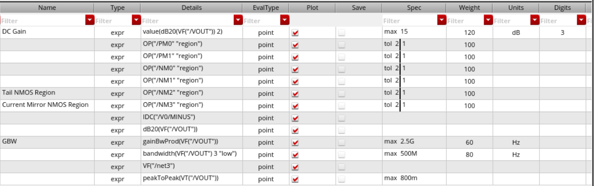
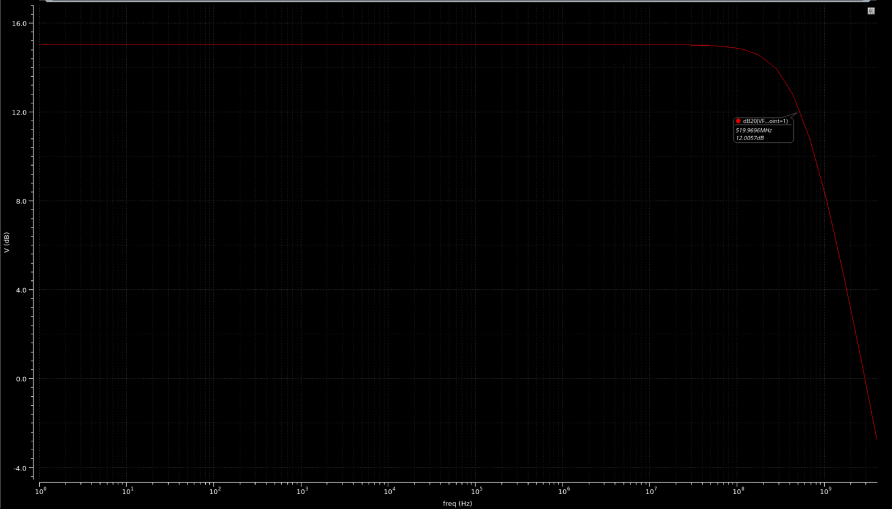
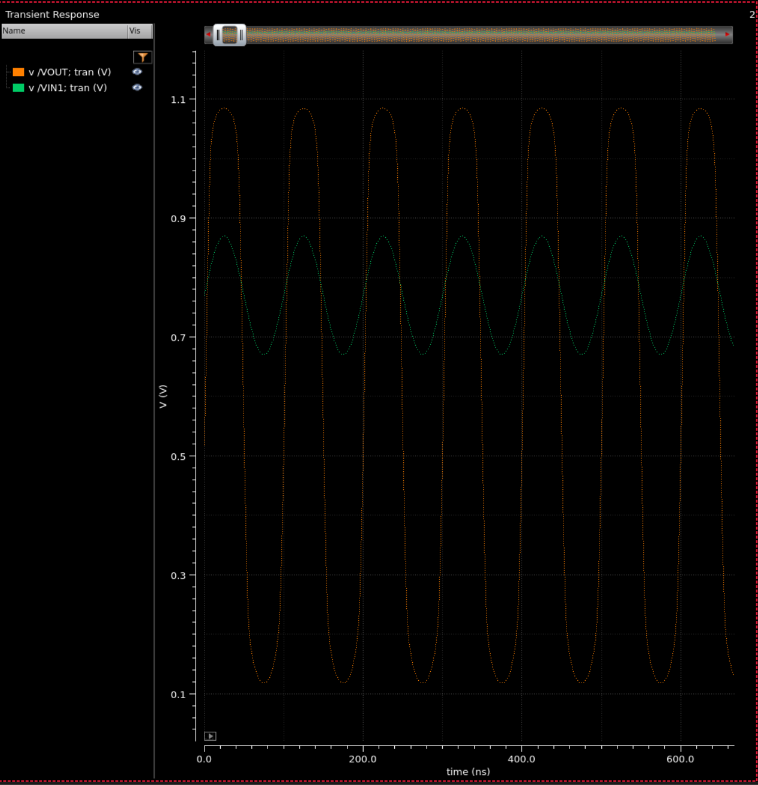

Analog / Mixed-Signal Design
5-Transistor OTA
Overview
Designed a 5-transistor operational transconductance amplifier (5T OTA) using the Cadence GPDK045 45 nm process technology in Cadence Virtuoso. The design targets key analog performance metrics: open-loop gain, output voltage swing, overdrive voltage margin, and closed-loop bandwidth — without a physical layout (schematic-level design).
The 5T OTA topology uses a differential input pair with a current mirror load and a tail current source, biased at a steady 1.5 mA. Design choices were driven by gain-bandwidth trade-offs and maximizing output swing within the 45nm process constraints.
A later revision brought the bias current down from 1.5 mA to about 1.2 mA. The results below are from the 1.5 mA version that was fully characterized.
All specifications were met or exceeded. The design achieved a unity-gain bandwidth of 1.134 GHz and a closed-loop 3 dB bandwidth of 152.4 MHz.
Performance Results
| Specification | Requirement | Result |
|---|---|---|
| Open Loop Low Frequency Gain | 10 V/V | 10.12 V/V |
| OTA Output Peak-to-Peak Swing | 1 V | 1.501 V |
| Overdrive Voltage | Vod > 100 mV | Met |
| Closed Loop Gain | 4 V/V | 4.5 V/V |
| Closed Loop Output Swing @ 100 MHz | 1 V | 1.005 V |
| Unity Gain Bandwidth (OTA) | — | 1.134 GHz |
| 3 dB Bandwidth (OTA) | — | 111.9 MHz |
| Unity Gain Bandwidth (Closed Loop) | — | 825.8 MHz |
| 3 dB Bandwidth (Closed Loop) | — | 152.4 MHz |
Design Process
The flow below is shown on a second design point of the same topology: a 1.1 V supply driving a 100 fF load from a 10 µA reference, optimized for bandwidth rather than gain.
- Hand calculation: sized every device from square-law equations, starting from the DC gain target gm(ro2 ∥ ro4), the input common-mode range, the output swing, and an overdrive budget of about 100 mV per device
- Initial simulation: ran DC, AC, and transient analyses on the hand-sized circuit to find where short-channel behavior at 45 nm departed from the square-law estimates
- Constrained optimization: set up ADE Assembler to tune widths against DC gain, gain-bandwidth, and 3 dB bandwidth targets, with every transistor constrained to stay in saturation and the output swing held as a spec
- Verification: swept differential-mode and common-mode gain from 1 Hz to 4 GHz and checked output swing and DC level in transient at 10 MHz

| Optimized design point | Simulated |
|---|---|
| Supply / load | 1.1 V / 100 fF |
| Reference / tail current | 10 µA / ≈ 0.6 mA |
| Differential DC gain | 15.0 dB |
| 3 dB bandwidth (dominant pole) | 520 MHz |
| Unity-gain bandwidth | ≈ 2.9 GHz |
| Common-mode gain | −24.5 dB |
| CMRR | ≈ 39.5 dB |
| Output swing @ 10 MHz | 0.12 V to 1.08 V |

